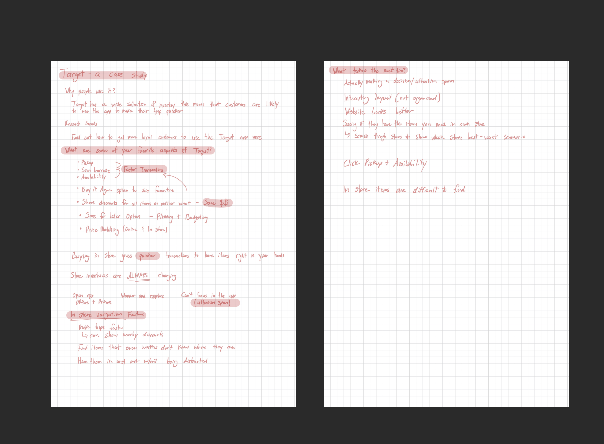
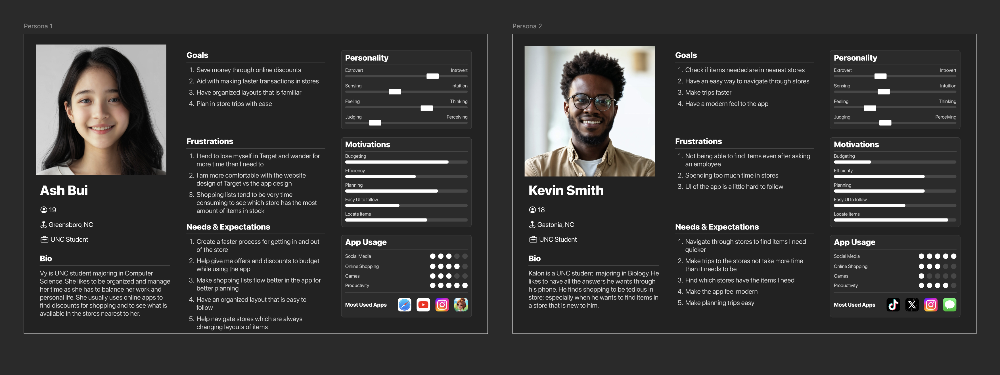
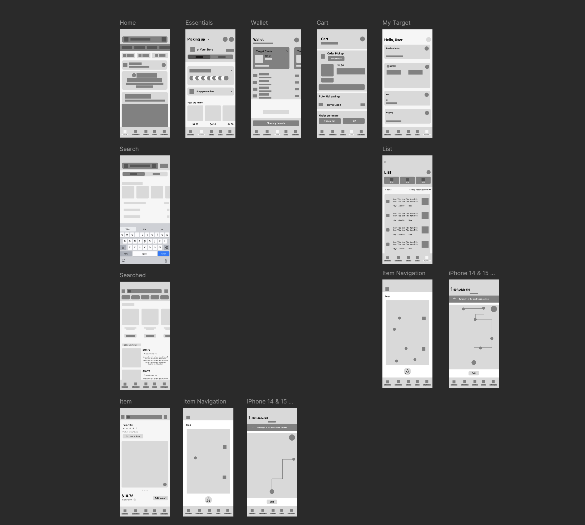
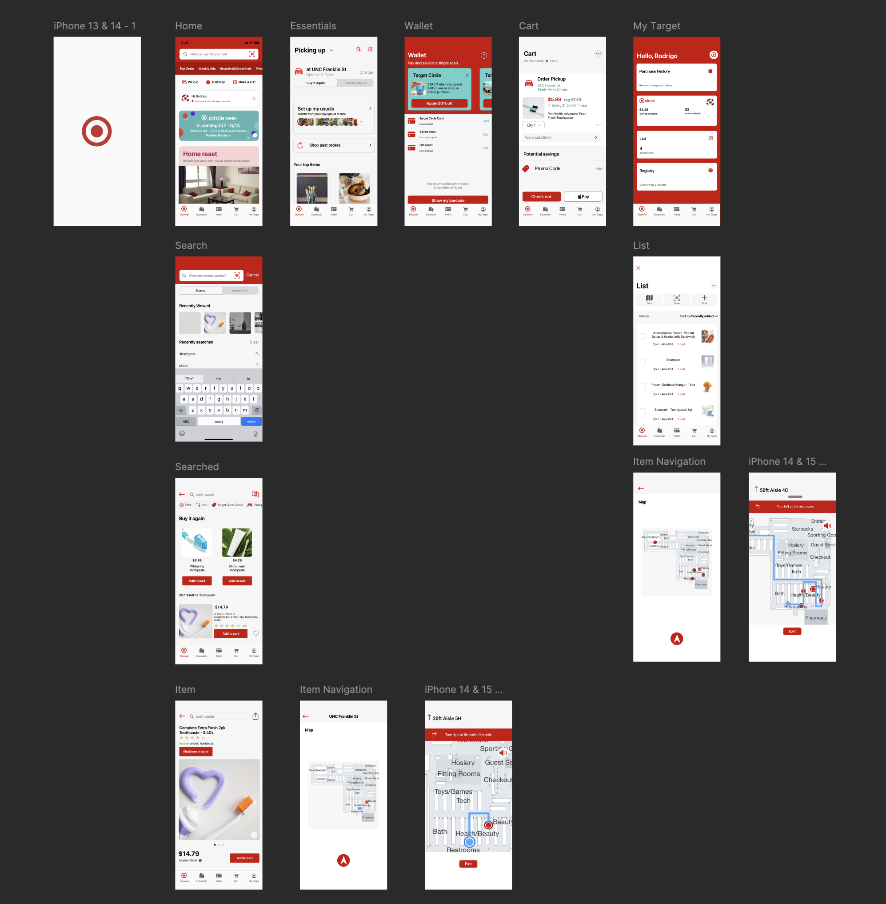
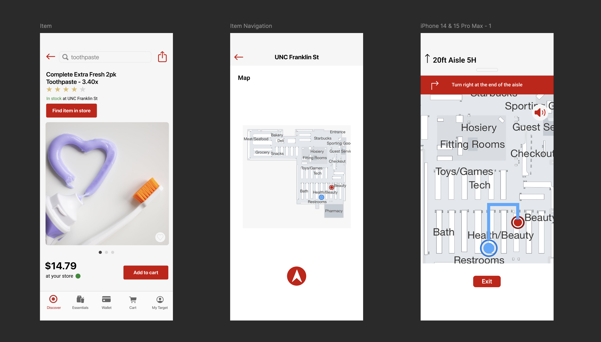

Designing a feature to help shoppers find items inside Target stores — before Target built it themselves.
This project was completed as part of App Team Carolina's UX Academy at UNC Chapel Hill — a program where student designers are tasked with identifying a meaningful gap in an existing app and designing a feature to fill it. I chose Target.
The premise was simple: Target has a wide inventory and a loyal customer base, but once you're inside the store, the app becomes almost useless. Employees don't always know where items are. Store layouts change. And shoppers — especially new ones — waste significant time just trying to find what they came for. The in-store experience was lagging behind the app's digital capabilities.
I started with a research phase to understand the core reasons customers choose to shop at Target in person rather than online. Three themes emerged quickly: speed of transaction (buying in-store means you leave with the item), access to discounts and offers visible in the app, and the ability to pick up or return items easily.
But layered underneath those motivators was a consistent friction point: in-store items are difficult to find. Shoppers noted that even asking employees wasn't reliable — store layouts shift frequently and inventory is always changing.
Opening the app in-store triggers offers and promotions — users get distracted and lose focus on what they came for.
Store layouts are visually complex and constantly changing, making navigation unintuitive even for repeat shoppers.
The existing app shows online availability but doesn't tell you which aisle or zone an item is in within your specific store.
Checking if a specific store has a specific item requires searching through multiple screens — no fast, single answer.

I developed two personas to represent the range of Target's in-store app users — a budget-conscious UNC student who shops strategically, and a casual shopper who wants speed but gets lost navigating both the store and the app.

Mapped out existing Target app flows and identified where in-store navigation was absent. Noted that "Pickup & Availability" was the closest existing feature but only showed if items were in stock — not where to find them physically.
Developed two personas representing core Target in-store app users, grounding design decisions in real motivations — speed, savings, and ease of navigation.
Built low-fidelity wireframes for all key screens: Home, Essentials, Search, Searched results, Item page with "Find Item in Store," Store Map, and turn-by-turn in-store directions. Focused on flow logic before visual treatment.
Applied Target's existing design language — red, white, clean type, familiar component patterns — so the feature felt native to the app rather than bolted on. Built out all screens in full fidelity including the interactive store map with aisle routing.


The feature was designed to integrate seamlessly into Target's existing app rather than feel like a separate tool. A shopper searches for an item, lands on its product page, and sees a new "Find Item in Store" button — which pulls up a live store map with their location marked and a highlighted route to the item's aisle.
Each screen was designed to feel native to Target's existing app language while introducing entirely new navigation functionality.

This wasn't just a class exercise. The problem was real, the solution was sound, and the market eventually agreed. Designing a feature that a Fortune 50 company later shipped is about as strong a proof of concept as a UX project can get.
This case study was completed within App Team Carolina's UX Academy — a rigorous program that pushed me to think like a product designer, not just a visual designer. The project required end-to-end UX work: research, personas, wireframes, and a polished high-fidelity prototype that could pass for a real feature proposal.
More importantly, it taught me to identify the gap between what an app does and what its users actually need — and to design into that gap with enough rigor that the solution feels inevitable in hindsight.
See the full prototype and design files